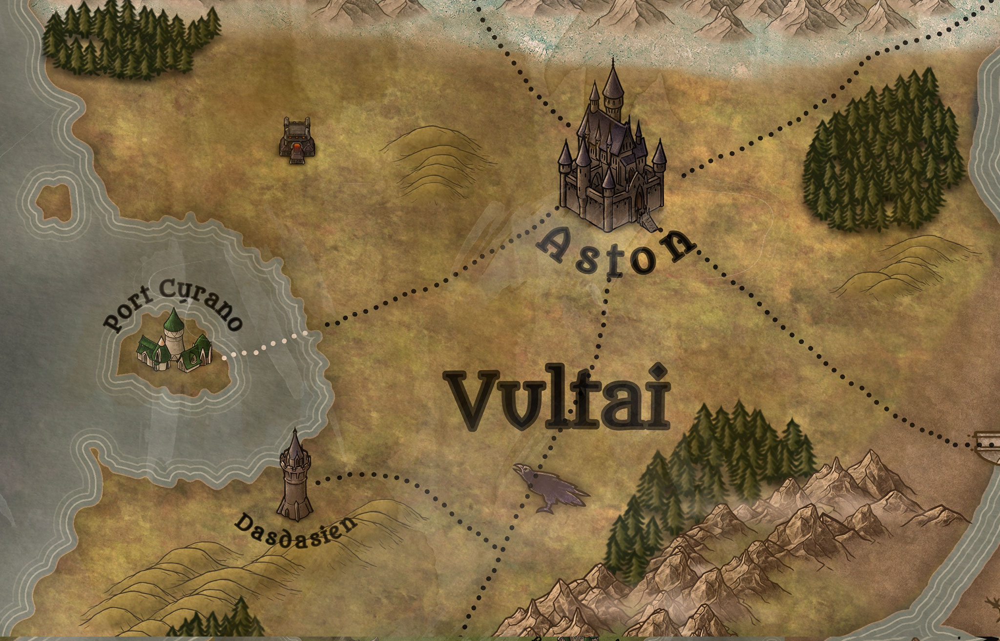

Regions
In the centuries after the wars of ice and fire, the new gods divided the eastern continent into five kingdoms. Each of these have their own history, laws, races, societies and of course rulers. There are three places on the main continent that officially don’t belong to any of the kingdoms though. Across the Ocean the continent of Madara again has its own, less influenced lore. Then there are many islands, mountain ranges and the lands past the Thundering Mountains. In the following chapter the most famous places will be shortly described.
The Cascian Empire

The Cascian Empire is by far the mightiest of the five kingdoms. Bordering on Vultai and Tarork, it is protected by the Demonic Peaks to the East and the Quisalorian Sea to the West. There is a warm climate nearly all year round, especially in the southern part of the country, which makes agriculture and logging one of the easiest industries. The North of the Empire is mostly flat with lots of space for fields and crops. There are lots of cities, towns and villages in this area and this region is probably the highest populated area in the world. The capital itself, Cascia, lies here as well. The biggest man made city has two great walls, hundreds of towers and many schools and libraries. The southern part of the Empire is filled with the Lizard’s Jungle, a dangerous place filled with many different races and creatures that dispute the reign of the Cascian Emperor. Only in the town of Darkwell does the military have a bigger presence. The Rainbow Isles are also a wild place. Piratery, thievery and other criminal activities are very normal here and a lot of people seem to embrace it. The Empire has been trying to rot out the thieves guild here for years, with little success so far. In Port Gerdes, the gigantic armada is positioned, just waiting to invade other countries and secure the coats of Xentaria. This is also the reason why the sigil of the Empire is a kraken. The Lanurian River makes its way through the kingdom as well, which gives the Empire direct access to Karagon, Vultai, Iseria and the Swamp Lands.
The Cascian Empire is home to the seat of the Alchemist Guild, the Crafts Guild and the Smiths’ Guild. The best weapons, ships, machines, potions and armor are produced here and sold around the whole world. That is a reason why the military power of the country is greater than that of any other. In 2617 the kingdom was first formed. After the war of ice and fire and the ‘Aston tribunal’, the goddess Cascia moved to this place and founded a home for her fellow humans. Safe from the icy north and the hot deserts she gathered many followers around her to build a city, today also known as Casica. She married here and had many children, starting a line of heirs that can be traced to today's emperor, Victor II. Over the years the Empire had many conflicts, especially with the Dwarves of Tarork and Karogon. In recent times the political situation between these parties has gone worse and many people fear the beginning of a war.
The Empire is also famous for tolerating slavery and necromancy, two things a lot of other nations look down upon. Thieves, murderers and tax evaders all have to fear for their freedom in case they get caught, then it is quite common for people to be sold if they commit crimes. And since Cascia herself was the goddess of death, many people practice necromancy. It is not openly encouraged, but in many places you can see undead servants helping out wizards or clerics on their daily tasks, a thing that many other kingdoms would punish with death. It is said that the palast in Cascia itself was built by an army of skeletons.
All these however are reasons though, why Cascia is probably the safest place in the world. Especially the northern part, beyond the Lizard’s Jungle, travel is very easy and crime rates are incredibly low. That is one of the reasons why so many people prefer to live in this country, then in other kingdoms.
Vultai
Vultai is also known as the land of mages. Surrounded by three other kingdoms, Karogon to the East, Iseria to the North and the Cascian Empire to the South, the land is highly shaped by these different influences. There are many forests, hills and even mountain ranges in this country, which makes agriculture rather difficult. That’s why the biggest food source in Vultai is livestock breeding or imports from the Empire. Bordering on so many other nations, Vultai has the difficult job of trying to maintain the peace with all of them, without offending its other allies. A difficult task because of the growing tension between Karogon and Cascia, and Iseria and Dornoth. Aston, the capital, is the second biggest city in Xentaria and famous for its architecture. Many temples, churches, cathedrals and other divine structures have been built here. It is also home to the leatherworkers guild, who produce some of the finest armor, shoes, belts, gloves and coats in the whole world and export it to all kingdoms. The magic guild has its own seed in Vultai as well. The city Dasdasien is famous for its wizarding school, the many towers, libraries and of course universities. It is also home to many raven towers. Hundreds of these birds fly off here every day to deliver letters all around the world. It is said that each delivery that is ever sent first goes through Dasdasien before reaching its true destination. That is why the sigil of Vultai is also a raven.
On a big island in the west of the country, Port Cyrano is their gate to the oceans. Having great trading routes to Port Gerdes, Port Balthasar and Port Eldrith, this city is every shoppers biggest dream since there is nearly nothing you can’t buy here. The close proximity to Dasdasien makes it also one of the best places to find magical items.
The kingdom was formed in 2605. After the wars the city of Aston, one of the only places still standing, was home to the new gods for some time. Here they talked about political decisions and made arrangements for the future of all races. This later became known as the ‘Aston tribunal’. The leader of this tribunal, an elven wizard named Vultai that had proven himself a fair and just judge, later became the name giver of the country. In the past, Vultai had many wars with Iseria and Karogon over borders, resources and policies, but for the last century they have been neutral and at peace. Today, Queen Fusadia I rules here. Unlike in the Cascian Empire, the ruler of Vultai is elected by the ‘Council of Vernun’. After the death of the last royal leader the 7 mightiest families come together and choose, usually one from amongst them, who will take control over the country. This event is always a rather cruel and unpleasant event, with lots of intrigues, bribery and bootlicking.
Vultai is also the only place, except for the Cascian Empire, where slavery is allowed and common practice. People in the raven kingdom say that they treat their slaves fair and just, not like they are treated in the Empire. However only a slave itself can be a judge of that.
Iseria
The frozen lands of Iseria are probably the most dangerous kingdom of Xentaria, at least if you ask the locals. Many strange and wild creatures roam the land and will attack travelers if they are not careful. The land is also plagued by blizzards and periods with very little sunshine, especially in the winter. Where the climate and the fauna create problems, other nations do not. Iseria is protected from invasion by the Dead Mountains. Only two passes, the ocean and the river Lecaistos make it possible to enter, all who are easily defended in times of war. No one in their right mind would try to get an army across the mountains itself. In the North, Gexos’ Border, a huge dark and dense forest reaches across the whole nation from East to West and separates the country from ‘the Frozen Wilds’. The borders to this woodland are very well guarded. Because there are still elemental creatures left over from the war and sometimes they try to invade the South through here. Iseria’s closest ally is Karogon, mostly because of the many Orc tribes that live in both countries. Trade between these two kingdoms flourishes and it is not rare that one will send military aid to the other in times of need. Dornoth is technically at war with the icy realm, but there hasn’t been any fighting in centuries, because of the great distance between the nations. Only in times of the ‘royal convention’ will the dispute between them become apparent. Recently however, the tension has grown again. Iseria is a wild land. Because of the cold that nearly lasts all year, farming is not an option and people are relying mostly on hunting. The country is filled with tribes that roam the tundra constantly looking for food and shelter. Only a few places are permanent settlements and those can’t compare to the size of cities like Cascia, or Aston.
Everwinter is considered the capital. It lies at Gexos’ Border and is famous for being the seat of the Hunters Guild. Many people from all over the world travel here to learn about tracking, crafting and other survival skills. The city is also the seat of the ‘Council of Clans’. Here the leaders of the five mightiest tribes decide on politics and governance. On the Frozen Coast lies Port Eldrith, the only real seaport in Iseria. It is the only connection to their rather large island Babuschkos where the only Elves in the kingdom live. Dekurian Castle is the only real stronghold in all of the nation. It was built by humans many years ago and is still the seat of one of the biggest tribes. All the way to the east, at the foot of the Thundering Mountains lies Grokok, an Orc settlement that is most famous for housing the tomb of the god Gexos.
Iseria was founded in 2678, after long discussions of the ‘Aston tribunal’ on how to deal with the remaining elementals and Genasi. When Gexos and Sionia finally erected the great forest that still protects the land, the strongest of the clans of the region gathered together to form a government, taking on the name of the creature they swear to never forget.
Being so far North, Iseria is of very little concern to most people. Their political influence is very slim and the tribes keep to themselves. Only in times of great peril will other nations call on the help of the icy kingdom. The hard conditions create incredible warriors of immense combat skill. The Goliath, Orc and Dragonborn clans are considered the toughest in the world, but they do lack the numbers to be a real danger to other kingdoms. Iseria has two crossed swords as their sigil.
Karogon
Karogon is a harsh land with little to offer for most races. It is the home of many outcast tribes and oftentimes called the land of the dragons, which is also its sigil. Hundreds of years ago the portal to the Feywild was opened here by the great worm Mextragon and the heroes of old. Its destruction and the fission left the land around here bare and fallow. Only very tough races can survive in the country of hills, deserts, craters and mountains. That is why it is populated by Dragonborn, Orcs and Hobgoblins. Karogon is the smallest of the kingdoms. Bordered by Vultai in the West and Iseria in the North it doesn’t have great political connections. Especially the tensions with the Cascian Empire and their slave trade make many people uneasy. In the South lies the Swamp Lands who technically belong to the kingdom. However the Orc and Dragonborn rarely bat an eye at the smaller races who live there and political decisions are usually made without their consideration. Not unlike Iseria, Karogon is filled with tribes and clans. Many nomadic people roam the country to look for food and someone to fight. Since Orcs are the dominant species fighting among the different parties here is quite common and there never truly is peace in the nation. Geddoz is the only real consistent settlement here. It is still mostly filled with tents and canvases, but there are a couple of stone made buildings here. One is the Mercenary Guild. The best warriors in all of Xentaria are trained here. There is also a great arena in which show fights take place to entertain the residents. All the combatants that learn to fight here will try to leave one day however. Pay in Karogon is not very good compared to the other kingdoms and whoever wants to earn a living from their tough occupation will have better luck in the Cascian Empire or Dornoth. Karogon has a king, however he changes quite frequently. The Orc warlord Isagubat is the current leader of the nation. But when someone challenges him to a duel he needs to accept and if he loses the fight the challenger will become king. At one time in history duels were called so often, that the king of the country changed 8 times in a month. That is why today, only one duell can be called each month. It is said that the wait list to challenge the current king is 7 years long.
Karogon was founded in 2819. After the war of ice and fire, the land was given to the Dragonborn by the ‘Aston tribunal’ as a ‘repayment’ for their efforts in the war. A very unfair deal as many of them believe today. Having no dragons or leader to stand up for them however, they needed to accept the deal of the heroes and learn to live with it. Soon many outcast races joined them. Many Orcs that were in heavy conflict with the Dwarves came here as well. Their population grew rapidly and soon they made most of the people here. During the ‘Underground Wars’ between the Dwarves of Tarork and the Orc tribes of the then unnamed country, an Orc warlord united many of the clans under his banner and formed this kingdom. Why it was named Karogon, no one knows. Some say that it was the name of the warlord's favourite axe. But since then the nation has been in constant state of war, tumult and never seen as a big political player in Xentaria. But no one will say that directly to an Orc, or Dragonborn, because they are quite proud of their nation and everyone fears that one day a king sits on the throne that is not getting challenged or replaced in a year and that Karogon will focus their violent attention on some other kingdom.
Dornoth
Dornoth is called the land of the free, the land of thieves or the land of demons, depending who you ask. This huge area of sand and rocky mountains is a paradise for all who don’t take laws and regulations too seriously. It lies all the way to the South of Xentaria and borders only to the Swamp Lands and the area around Tarork. A huge part of it also connects to the Midorian Waters, a gigantic lake that is one of the most important water sources for the country. Mount Verena, a gigantic vulcano range towers across the nation and makes the area around it verdant and useful for agriculture. Dornoth is the home of the Tieflings. More of these demonic relatives can be found here than anywhere in the world, especially in Armedestan. Eliasien is the capital of the country. Half in the desert, half in the greenlands it doesn’t suffer from the heat and bad soil the rest of the nation has to deal with. It also profits greatly from Mount Verena. Here the current king, Thinnal I resides and rules the country with a not so forceful grip. Money is what speaks louder in Dornoth than laws and everyone who owns it has great influence. Some people also claim that the Thieves Guild has taken over the rule of the nation and the king is just a puppet.
Eliasien is home to the Merchants Guild. Here, people trade all sorts of goods, learn how to bargain and become business associates. Many Loxodons reside here and some say their honest race is the only thing that still keeps the city honourable.
Dornoth was founded in 2658. After the war the many remaining Tieflings and Humans needed a home. The land was given to the hero Svalen to form a nation. Naming the country after the demon lord that terrorised the world, he hoped that it would be a reminder for anyone who practiced evil demonic arts. This plan seemed to backfire. Today Dornoth is considered a central point for evil, demonic magic, even though it is forbidden. That is also why the land has a bad reputation among other nations.
Dornoth has been at war with Iseria for centuries, but fighting is a rare occurrence. Tension has been growing however, because of magical items that were found in the icy kingdom and that Thinnal I believes to belong to his nation. The influence of the kingdom in the ‘royal convention’ is very high and a lot of other countries are worried about an alliance with the Cascian Empire. Especially Karogon and Tarork fear that their combined might could shift the power proportions of the world.
Tarork
Tarork is officially not a kingdom, but has the same status among many historians, politicians and especially among the Dwarves. Tarork, is the name of the dwarven city that stretches out across the Demonic Peaks. While only a small part of the metropole is above ground, the city is huge in the underworld. It is directly connected to the ‘Way of the Depths’ and many expeditions to recover lost dwarven glory are sent from out here every year. The planes around the mountain range and city have no name themselves, but make out a huge area from the Swamp Lands, to the Cascian Empire up until Dornoth. This land is considered neutral ground and many treaties or meetings are held here. The city has not a single leader, or king, but a senat where Dwarves discuss current politics and foreign affairs. In general they try to keep out of the issues of the other kingdoms, but in recent times it has gotten more and more difficult to do so. Tarork is mostly populated by Dwarves, but there are some Humans, Elves and even Tieflings among them. Orcs and Genasi are complety forbidden here, but none of these races would be so dumb and walk into Dwarven territory. The city is also the seat of two important institutions. The Masons Guild teaches the best stone work in all of Xentaria and in the Jewelers Guild, many valuable gems or secured from the depths of the underworld. Tarork is a rich city and that is why it has quite a lot of influence. While not having an official seat in the ‘royal convention’, it is still very common to have at least one or two dwarvish lords present.
The Frozen Wilds
Far to the North, past Gexos’ Border lie the Frozen Wilds. This place doesn’t belong to anyone and few have ever seen it. The name holds true, then it is a wild place where lots of strange creatures roam and hunt. Since its creation nearly seven hundred years ago, lots of legends have evolved around it. Some people claim that Ice Genies live there, children of the demigoddess Iseria. Others say the region is hunted by elemental creatures of incredible cruelty that sometimes try to make their way into the South. Others again say frost giants made the area their home, happy to be far away from the smaller people and they are the ones that are sending creatures to the South just to make sure no one comes to find and disturb them. Whatever the truth is, fact is that very few people ever return from a trip into this territory and those who do don’t have kind words to tell about it.
The Rainbow Isles
Officially the Rainbow Isles belong to the Cascian Empire, but if you tell that to many of the locals
you will either get laughed at or called out to a duel. It is a wild place where law has little meaning
and the strict rules of the rest of the kingdom don’t apply. Lying west of the region Obrana, the Isles
are the jumping point across the ocean to Madara. This place consists of dozens of different sized
islands that all have their secrets and mysteries.
For a long time the Rainbow Isles were not paid too much attention to by the Emperor. Connected to the
Lizard’s Jungle, they were considered Yuan-Ti territory and therefore highly dangerous. In the last
century however, more and more adventurers have traveled here and come back with stories of lost ruins,
magical creatures and sparkling treasures. These tales drew many people here and today, some of the
Isles are populated with even towns on top of them. Port Gerdes is the biggest city here. It lies at the
shore of Obrana but has many trading routes to the islands. The military presence of the Cascian Empire
is very strong here, compared to the rest of the area. Many ships of the Cascian Armada are seen here
everywhere. The Empire tries to control the rest of the Isles, but so far in vain.
DeadEye Island is the biggest and most well known place. It is a huge jungle infested donut shaped land
mass that harbours the famous pirate town, Crark. Being not directly connected to the sea, the town has
a huge advantage compared to other towns in the area. There are dozens of scouts all over DeadEye Island
that are on constant lookout for the Cascian military. Whenever they are trying to send troops to
capture the pirates and criminals living here the town will be alarmed well in advance, before any
forces can make their way through the thick forest. By then, usually all pirates have either disappeared
or made all evidence of their crimes vanish. Many attempts of putting up a permanent base of operation
in Crark have been made, but somehow the stationed troops always seem to vanish after a while.
The Thieves Guild has a strong presence here and many of the pirates and other rogues are in close
contact with them. There are also many other organisations, like the Fisher’s Trade Company, or the
Grung Slaver’s Market. Then there are many pirate groups who fight amongst each other, if they are not
fleeing from the Empire, for the rule of the Quisalorian Sea.
While the area is much more explored than half a century ago, it is still full of dangers. The Yuan-Ti
have many temple ruins here and usually try to protect them from treasure hunters. Many tribes of the
Lizardfolk also live here and are on the hunt for food or riches. And if you are unlucky you might run
into a Grung patrol in search of new slaves. Then there are countless sea creatures like sharks, giant
crabs, hydras, whales or even kraken that are able to sink whole fleets. In recent times there have been
rumours, that sometimes even new islands appear out of the depths of the oceans filled with even
stranger and more dangerous beings.
Madara
Madara is the continent to the West. It is a huge area that was not as terrorised by the war, as the rest of Xentaria. The Elven culture that dominates this land had much more time to evolve and flourish than in any other place in the world. That is also why there are much older buildings and better historical documentation here. But unlike in the East, you won’t find any kingdoms here. Madara is a place where every city fends for itself. There is no leader or ruler, but just a series of towns that trade with each other. Outsiders will call Caellin the capital, but it is just the biggest city with the most political power. The governor of the city has no power over Teratona, or Mortima. The city lies at the edge of the lake of a Thousand Things, a mythical place where people constantly seem to vanish from. It also has trade routes to Port Balthasar, the biggest sea port in Madara, that connects the continent with the rest of the world. Other ways lead to Teratona, the biggest dwarven settlement here, or through the Eternal Forest, a strange place, where time seems to move slower. Mortima is a huge place that many Elves travel to when they are close to getting ‘Elven Lunacy’. While Madara was the home of the Elves once, today, more Humans and Dwarves live here. More and more influence from the West can be seen here. You will find many guild houses here for example. A thing that was unheard of just a century ago.
Previous Chapter
Next Chapter